3. مقدمة إلى لغة SQL
في هذا القسم من الفصل، نقدم أوامر SQL الأولى لإنشاء جدول واحد والعمل عليه. نقدم عمومًا نسخة مبسطة من هذه الأوامر. تتوفر صيغتها الكاملة في أدلة مرجعية Firebird (انظر القسم 2.2).
يتم استخدام قاعدة البيانات من قبل أشخاص ذوي مهارات متنوعة:
- عادةً ما يكون مسؤول قاعدة البيانات شخصًا بارعًا في لغة SQL وقواعد البيانات. وهو المسؤول عن إنشاء الجداول، حيث إن هذه العملية عادةً ما تُجرى مرة واحدة فقط. ومع مرور الوقت، قد يحتاج إلى تعديل البنية. قاعدة البيانات هي مجموعة من الجداول المرتبطة ببعضها البعض من خلال علاقات. ويقوم مسؤول قاعدة البيانات بتحديد هذه العلاقات. كما يمنح الأذونات لمختلف مستخدمي قاعدة البيانات. على سبيل المثال، قد يحدد أن مستخدمًا معينًا لديه الحق في عرض محتويات جدول ما دون تعديله.
- مستخدم قاعدة البيانات هو الشخص الذي يضفي الحياة على البيانات. اعتمادًا على الأذونات الممنوحة من قبل مسؤول قاعدة البيانات، سيقوم بإضافة البيانات وتعديلها وحذفها في الجداول المختلفة لقاعدة البيانات. كما سيقوم بتحليل البيانات لاستخراج المعلومات المفيدة للتشغيل السلس للأعمال والإدارة وما إلى ذلك.
في القسم 2.6، قدمنا محرر SQL الخاص بأداة [IB-Expert]. هذه هي الأداة التي سنستخدمها. دعونا نستعرض بعض النقاط:
- يمكن الوصول إلى محرر SQL عبر خيار القائمة [أدوات/محرر SQL] أو بالضغط على مفتاح [F12]

يؤدي هذا إلى فتح نافذة [محرر SQL] حيث يمكننا كتابة أمر SQL:

غالبًا ما يتم تمثيل لقطة الشاشة أعلاه بالنص التالي:
3.1. أنواع بيانات Firebird
عند إنشاء جدول، يجب تحديد نوع البيانات الذي يمكن أن يحتوي عليه عمود الجدول. هنا، نقدم أنواع البيانات الأكثر شيوعًا في Firebird. لاحظ أن أنواع البيانات هذه قد تختلف من نظام إدارة قواعد البيانات (DBMS) إلى آخر.
عدد صحيح في النطاق [-32768، 32767]: 4 | |
عدد صحيح في النطاق [–2,147,483,648, 2,147,483,647]: -100 | |
عدد حقيقي مكون من n أرقام، منها m أرقام عشرية NUMERIC(5,2): -100.23, +027.30 | |
عدد حقيقي مقرب إلى 7 أرقام معنوية: 10.4 | |
عدد حقيقي مقرب إلى 15 خانة معنوية: -100.89 | |
سلسلة مكونة من N حرفًا بالضبط. إذا كانت السلسلة المخزنة تحتوي على أقل من N حرفًا، يتم ملؤها بمسافات. CHAR(10): 'ANGERS ' (4 مسافات في النهاية) | |
سلسلة تصل إلى N حرفًا VARCHAR(10): 'ANGERS' | |
تاريخ: '2006-01-09' (تنسيق YYYY-MM-DD) | |
الوقت: '16:43:00' (تنسيق HH:MM:SS) | |
التاريخ والوقت معًا: '2006-01-09 16:43:00' (التنسيق YYYY-MM-DD HH:MM:SS) |
تسمح لك الدالة CAST() بالتحويل من نوع إلى آخر عند الضرورة. لتحويل قيمة V المعلنة على أنها من النوع T1 إلى النوع T2، تكتب: CAST(V,T2). يمكنك إجراء تحويلات الأنواع التالية:
- رقم إلى سلسلة. هذا التحويل بين الأنواع ضمني ولا يتطلب استخدام دالة CAST. وبالتالي، فإن العملية 1 + '3' لا تتطلب تحويل الحرف '3'. والنتيجة هي الرقم 4.
- DATE و TIME و TIMESTAMP إلى سلاسل والعكس. وبالتالي
- TIMESTAMP إلى TIME أو DATE والعكس
في الجدول، قد يحتوي الصف على أعمدة بدون قيمة. نقول إن قيمة العمود هي الثابت NULL. يمكنك التحقق من وجود هذه القيمة باستخدام العوامل
IS NULL / IS NOT NULL
3.2. إنشاء جدول
لتعلم كيفية إنشاء جدول، سنبدأ بإنشاء واحد في وضع [التصميم] باستخدام IBExpert. للقيام بذلك، سنتبع الطريقة الموضحة في القسم 2.3. سيؤدي ذلك إلى إنشاء الجدول التالي:

سيُستخدم هذا الجدول لتسجيل الكتب التي اشترتها المكتبة. ومعنى الحقول هو كما يلي:
الاسم | النوع | القيد | المعنى |
كان من الممكن إنشاء هذا الجدول، الذي تم إنشاؤه باستخدام معالج IBEXPERT، مباشرةً باستخدام عبارات SQL. لعرض هذه العبارات، ما عليك سوى التحقق من علامة التبويب [DDL] الخاصة بالجدول:

فيما يلي كود SQL المستخدم لإنشاء الجدول [BIBLIO]:
- السطر 1: المالك Firebird - يشير إلى مستوى لهجة SQL المستخدم
- السطر 2: خاص بـ Firebird - يحدد مجموعة الأحرف المستخدمة
- الأسطر 6–14: معيار SQL: ينشئ جدول BIBLIO عن طريق تحديد اسم ونوع بيانات كل عمود من أعمدة الجدول.
- السطر 16: معيار SQL: ينشئ قيدًا يحدد أن عمود TITLE لا يسمح بالتكرار
- السطر 17: معيار SQL: يحدد أن عمود [ID] هو المفتاح الأساسي للجدول. وهذا يعني أنه لا يمكن أن يكون هناك صفان في الجدول لهما نفس المعرف. وهذا مشابه لقيد [UNIQUE NOT NULL] على عمود [TITLE]، وفي الواقع كان من الممكن أن يكون عمود TITLE هو المفتاح الأساسي. الاتجاه الحالي هو استخدام مفاتيح أساسية ليس لها معنى محدد ويتم إنشاؤها بواسطة نظام إدارة قواعد البيانات (DBMS).
صيغة الأمر [CREATE TABLE] هي كما يلي:
CREATE TABLE table (column_name1 column_type1 column_constraint1, column_name2 column_type2 column_constraint2, ..., column_nameN column_typeN column_constraintN, other constraints) | |||||||||
ينشئ الجدول table بالأعمدة المحددة
|
كان من الممكن أيضًا إنشاء الجدول [BIBLIO] باستخدام عبارة SQL التالية:
دعونا نوضح ذلك. لنفتح هذا الاستعلام في محرر SQL (F12) لإنشاء جدول سنسميه [BIBLIO2]:

بعد التنفيذ، يجب عليك تثبيت المعاملة لرؤية النتيجة في قاعدة البيانات:

بمجرد الانتهاء من ذلك، يظهر الجدول في قاعدة البيانات:

بالنقر المزدوج على اسمه، يمكننا عرض هيكله:
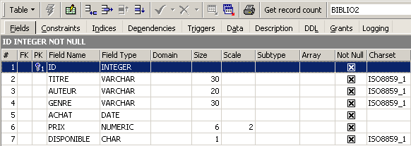
يمكننا رؤية التعريف الذي أنشأناه للجدول [BIBLIO2]
3.3. حذف جدول
فيما يلي عبارة SQL لحذف جدول:
DROP TABLE table | |
يحذف [الجدول] |
لحذف الجدول [BIBLIO2] الذي أنشأناه للتو، نقوم الآن بتنفيذ الأمر SQL التالي:

ونؤكد ذلك بـ [Commit]. يتم حذف الجدول [BIBLIO2]:

3.4. ملء جدول
دعونا ندرج صفًا في الجدول [BIBLIO] الذي أنشأناه للتو:
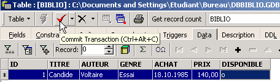
قم بتأكيد إضافة الصف باستخدام [Commit]، ثم انقر بزر الماوس الأيمن على الصف المضاف:

وكما هو موضح أعلاه، انسخ الصف الذي تم إدراجه إلى الحافظة كعبارة SQL INSERT. بعد ذلك، افتح أي محرر نصوص والصق ما قمنا بنسخه للتو. نحصل على كود SQL التالي:
INSERT INTO BIBLIO (ID,TITRE,AUTEUR,GENRE,ACHAT,PRIX,DISPONIBLE) VALUES (1,'Candide','Voltaire','Essai','18-OCT-1985',140,'o');
صيغة جملة SQL INSERT هي كما يلي:
insert into table [(column1, column2, ..)] values (value1, value2, ....) | |
تضيف صفًا (القيمة 1، القيمة 2، ...) إلى الجدول. تُخصص هذه القيم للعمود 1، العمود 2، ... إن وجدت؛ وإلا، تُخصص لأعمدة الجدول بالترتيب الذي تم تعريفها به. |
لإدراج صفوف جديدة في جدول [BIBLIO]، سنكتب عبارات INSERT التالية في محرر SQL. سنقوم بتنفيذ هذه العبارات وتثبيتها واحدة تلو الأخرى. سنستخدم زر [New Query] للانتقال إلى عبارة INSERT التالية.
بعد تنفيذ [Commit] عبارات SQL المختلفة، نحصل على الجدول التالي:
 |
3.5. الاستعلام عن جدول
3.5.1. مقدمة
في محرر SQL، اكتب الأمر التالي:

وقم بتنفيذه. نحصل على النتيجة التالية:

يُستخدم الأمر SELECT لاسترداد البيانات من جداول قاعدة البيانات. يتميز هذا الأمر ببنية لغوية غنية جدًا. سنركز هنا على البنية اللغوية للاستعلام عن جدول واحد. وسنتناول الاستعلام عن جداول متعددة في وقت لاحق. فيما يلي البنية اللغوية لأمر SQL [SELECT]:
SELECT [ALL|DISTINCT] [*|expression1 alias1, expression2 alias2, ...] FROM table | |
يعرض قيم التعبير1 لجميع الصفوف في الجدول. يمكن أن يكون التعبير1 عمودًا أو تعبيرًا أكثر تعقيدًا. يشير الرمز * إلى جميع الأعمدة. بشكل افتراضي، يتم عرض جميع الصفوف في الجدول (ALL). في حالة وجود DISTINCT، يتم عرض الصفوف المحددة المتطابقة مرة واحدة فقط. يتم عرض قيم التعبير1 في عمود بعنوان التعبير1 أو الاسم المستعار1 إذا تم استخدام هذا الأخير. |
أمثلة:


في الأمثلة أعلاه، قمنا بتعيين أسماء مستعارة (BOOK_TITLE، PURCHASE_PRICE) للأعمدة المطلوبة.
3.5.2. عرض الصفوف التي تستوفي شرطًا
SELECT .... WHERE الشرط | |
يتم عرض الصفوف التي تستوفي الشرط فقط |
أمثلة


أحد الكتب ينتمي إلى النوع "novel" وليس "Novel". نستخدم الدالة UPPER، التي تحول السلسلة إلى أحرف كبيرة، للحصول على جميع الروايات.

يمكننا الجمع بين الشروط باستخدام العوامل المنطقية
المنطقي AND | |
المنطقية OR | |
النفي المنطقي |


 |

3.5.3. عرض الصفوف بترتيب معين
إلى الصيغ السابقة، يمكنك إضافة جملة ORDER BY لتحديد ترتيب العرض المطلوب:
SELECT .... ORDER BY التعبير1 [asc|desc]، التعبير2 [asc|desc]، ... | |
يتم عرض صفوف نتائج الاختيار بالترتيب 1: ترتيب تصاعدي (asc / تصاعدي، وهو الإعداد الافتراضي) أو تنازلي (desc / تنازلي) للتعبير 1 2: إذا كان التعبير 1 متساويًا، تعتمد العرض على قيم التعبير 2 إلخ. |
أمثلة:

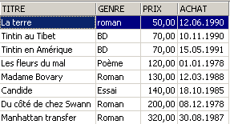


3.6. حذف صفوف من جدول
DELETE FROM table [WHERE condition] | |
يحذف صفوف الجدول التي تستوفي الشرط. إذا لم يتم تحديد أي شرط، يتم حذف جميع الصفوف. |
أمثلة:

يتم تنفيذ الأمرين التاليين واحدًا تلو الآخر:

3.7. تعديل محتويات الجدول
update table set column1 = expression1, column2 = expression2, ... [حيث الشرط] | |
بالنسبة لصفوف الجدول التي تستوفي الشرط (جميع الصفوف في حالة عدم وجود شرط)، يتم تعيين العمود1 إلى قيمة التعبير1. |
أمثلة:
نكتب جميع الأنواع بأحرف كبيرة:

نقوم بالتحقق:

عرض الأسعار:

يرتفع سعر الروايات بنسبة 5%:
دعونا نتحقق:

3.8. تحديث الجدول بشكل دائم
عند إجراء تغييرات على جدول، يقوم Firebird فعليًا بتطبيقها على نسخة من الجدول. يمكن بعد ذلك جعل هذه التغييرات دائمة أو التراجع عنها باستخدام الأوامر COMMIT و ROLLBACK.
COMMIT | |
يجعل التحديثات التي تم إجراؤها على الجداول منذ آخر COMMIT دائمة. |
التراجع | |
يعيد جميع التغييرات التي تم إجراؤها على الجداول منذ آخر COMMIT. |
يتم تنفيذ COMMIT ضمناً في الأوقات التالية: أ) عند تسجيل الخروج من Firebird ب) بعد كل أمر يؤثر على بنية الجداول: CREATE، ALTER، DROP. |
أمثلة
في محرر SQL، يمكنك استعادة قاعدة البيانات إلى حالة معروفة عن طريق تثبيت جميع العمليات التي تم تنفيذها منذ آخر COMMIT أو ROLLBACK:
نسترد قائمة العناوين:

حذف عنوان:
التحقق:

تم حذف العنوان بنجاح. الآن سنقوم بإلغاء جميع التغييرات التي تم إجراؤها منذ آخر COMMIT / ROLLBACK:
التحقق:

لقد عاد العنوان المحذوف للظهور. والآن دعونا نسترجع قائمة الأسعار:

دعونا نضبط جميع الأسعار على صفر.
دعونا نتحقق من الأسعار:

دعونا نلغي التغييرات التي تم إجراؤها على قاعدة البيانات:
ونتحقق من الأسعار مرة أخرى:

لقد استعدنا الأسعار الأصلية.
3.9. إضافة صفوف من جدول إلى آخر
من الممكن إضافة صفوف من جدول إلى آخر عندما تكون هياكلها متوافقة. لتوضيح ذلك، لنبدأ بإنشاء جدول [BIBLIO2] بنفس هيكل [BIBLIO].
في مستكشف قاعدة البيانات IBExpert، انقر نقرًا مزدوجًا على الجدول [BIBLIO] للوصول إلى علامة التبويب [DDL]:

في هذه العلامة التبويبية، ستجد قائمة بعبارات SQL المستخدمة لإنشاء الجدول [BIBLIO]. انسخ كل هذا الرمز إلى الحافظة (CTRL-A، CTRL-C). ثم افتح أداة تسمى [Script Executive] تتيح لك تنفيذ قائمة بعبارات SQL:
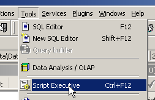
سيتم فتح محرر نصوص، حيث يمكننا لصق (CTRL-V) النص الذي تم نسخه مسبقًا إلى الحافظة:

غالبًا ما يُطلق على قائمة أوامر SQL اسم نص SQL. سيسمح لنا [Script Executive] بتنفيذ مثل هذا النص، في حين أن محرر SQL لا يسمح إلا بتنفيذ أمر واحد في كل مرة. ينشئ نص SQL الحالي الجدول [BIBLIO]. دعونا نجعله ينشئ جدولًا باسم [BIBLIO2]. للقيام بذلك، ما عليك سوى تغيير [BIBLIO] إلى [BIBLIO2]:
دعونا نقوم بتشغيل هذا البرنامج النصي باستخدام زر [تشغيل البرنامج النصي] أدناه:

تم تنفيذ البرنامج النصي:
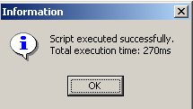
ويمكننا رؤية الجدول الجديد في مستكشف قاعدة البيانات:

إذا نقرنا مرتين على [BIBLIO2] للتحقق من محتوياته، نجد أنه فارغ، وهذا أمر طبيعي:

يتيح لك أحد أشكال جملة SQL INSERT إدراج صفوف من جدول إلى آخر:
INSERT INTO table1 [(column1, column2, ...)] SELECT العمود1، العمود2، ... FROM الجدول2 WHERE الشرط | |
تُضاف الصفوف من الجدول 2 التي تستوفي الشرط إلى الجدول 1. يتم تعيين الأعمدة العمود1، العمود2، ... من الجدول 2 بالترتيب إلى العمود1، العمود2، ... في الجدول 1، ولذلك يجب أن تكون من أنواع متوافقة. |
لنعد إلى محرر SQL:

وننفذ عبارة SQL التالية:
والذي يقوم بإدراج جميع الصفوف من [BIBLIO] التي تتوافق مع رواية في [BIBLIO2]. بعد تنفيذ عبارة SQL، دعونا نلتزم بها باستخدام [Commit]:
الآن، دعونا نعرض البيانات الموجودة في جدول [BIBLIO2]:

3.10. حذف جدول
DROP TABLE table | |
حذف الجدول |
مثال: حذف الجدول BIBLIO2
تأكيد التغيير:
في مستكشف قاعدة البيانات، قم بتحديث عرض الجدول:

نلاحظ أن الجدول [BIBLIO2] قد تم حذفه:

3.11. تعديل بنية الجدول
ALTER TABLE table [ ADD اسم_العمود1 نوع_العمود1 قيد_العمود1] [ALTER اسم_العمود2 TYPE نوع_العمود2] [DROP اسم_العمود3] [ADD القيد] [DROP CONSTRAINT اسم_القيد] | |
يسمح لك بإضافة (ADD) وتعديل (ALTER) وحذف (DROP) أعمدة الجدول. صيغة column_name1 column_type1 column_constraint1 هي نفس صيغة CREATE TABLE. يمكنك أيضًا إضافة أو حذف قيود الجدول. |
مثال: قم بتنفيذ الأمرين التاليين من SQL بالتتابع في محرر SQL
في مستكشف قاعدة البيانات، دعونا نتحقق من بنية جدول [BIBLIO]:

تم تطبيق التغييرات. دعونا نرى كيف تغيرت محتويات الجدول:

تم إنشاء العمود الجديد [NB_PAGES] ولكنه لا يحتوي على أي قيم. دعونا نحذف هذا العمود:
دعونا نتحقق من البنية الجديدة لجدول [BIBLIO]:

لقد اختفى عمود [NB_PAGES] بالفعل.
3.12. طرق العرض
من الممكن الحصول على عرض جزئي لجدول أو عدة جداول. تعمل طريقة العرض مثل الجدول ولكنها لا تحتوي على بيانات. يتم استخراج بياناتها من جداول أو طرق عرض أخرى. تتمتع طريقة العرض بعدة مزايا:
- قد يهتم المستخدم فقط بأعمدة وصفوف معينة من جدول معين. تسمح له طريقة العرض برؤية تلك الصفوف والأعمدة فقط.
- قد يرغب مالك الجدول في منح وصول محدود فقط للمستخدمين الآخرين. تسمح له طريقة العرض بالقيام بذلك. لن يتمكن المستخدمون الذين أذن لهم سوى من الوصول إلى طريقة العرض التي حددها.
3.12.1. إنشاء عرض
CREATE VIEW اسم_العرض AS SELECT العمود1، العمود2، ... FROM الجدول WHERE الشرط [ مع خيار الفحص ] | |
ينشئ العرض view_name. وهو عبارة عن جدول يتكون من الأعمدة column1 و column2 و... المأخوذة من الجدول table، أما الصفوف فهي الصفوف المأخوذة من الجدول table التي تستوفي الشرط (جميع الصفوف في حالة عدم وجود شرط) | |
تحدد هذه الجملة الاختيارية أنه يجب ألا تؤدي عمليات الإدراج والتحديث في العرض إلى إنشاء صفوف لا يمكن للعرض تحديدها. |
ملاحظة إن بناء جملة CREATE VIEW أكثر تعقيدًا في الواقع مما هو موضح أعلاه، وتسمح، على وجه الخصوص، بإنشاء عرض من جداول متعددة. للقيام بذلك، تحتاج عبارة SELECT ببساطة إلى الإشارة إلى جداول متعددة (انظر الفصل التالي).
أمثلة
نقوم بإنشاء عرض من الجدول biblio يتضمن الروايات فقط (اختيار الصفوف) وأعمدة العنوان والمؤلف والسعر فقط (اختيار الأعمدة):
في مستكشف قاعدة البيانات، قم بتحديث العرض (F5). يظهر عرض:

يمكننا عرض عبارة SQL المرتبطة بالعرض. للقيام بذلك، انقر نقرًا مزدوجًا على عرض [ROMANS]:

الطريقة تشبه الجدول. لها بنية:
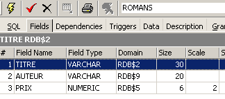
ومحتوى:
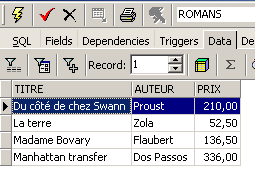
يُستخدم العرض مثل الجدول. يمكنك تشغيل استعلامات SQL عليه. فيما يلي بعض الأمثلة لتجربتها في محرر SQL:

هل تظهر الرواية الجديدة في عرض [ROMANS]؟

دعونا نضيف شيئًا آخر غير الرواية إلى جدول [BIBLIO]:
SQL> insert into biblio(id,titre,auteur,genre,achat,prix,disponible) values (11,'Poèmes saturniens','Verlaine','Poème','02-sep-92',200,'o');
دعونا نتحقق من جدول [BIBLIO]:

دعونا نتحقق من عرض [ROMANS]:

الكتاب المضاف غير موجود في عرض [ROMANS] لأنه لم يكن يحتوي على upper(genre)='ROMAN'.
3.12.2. تحديث عرض
يمكنك تحديث عرض تمامًا كما تفعل مع الجدول. تتأثر جميع الجداول التي يتم استخراج بيانات العرض منها بهذا التحديث. فيما يلي بعض الأمثلة:
SQL> insert into biblio(id,titre,auteur,genre,achat,prix,disponible) values (13,'Le Rouge et le Noir','Stendhal','Roman','03-oct-92',110,'o')


نحذف صفًا من عرض [ROMANS]:


تم حذف الصف الذي تم حذفه من عرض [NOVELS] من جدول [BIBLIO] أيضًا. سنقوم الآن بزيادة سعر الكتب في عرض [NOVELS]:
دعونا نتحقق من ذلك في [NOVELS]:

ما هو التأثير على جدول [BIBLIO]؟

لقد تم بالفعل رفع أسعار الروايات بنسبة 5% في [BIBLIO] أيضًا.
3.12.3. حذف طريقة عرض
DROP VIEW اسم_العرض | |
يحذف العرض المسمى |
مثال
في مستكشف قاعدة البيانات، يمكنك تحديث العرض (F5) لترى أن عرض [ROMANS] قد اختفى:
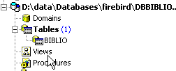
3.13. استخدام وظائف المجموعات
هناك دوال تعمل على مجموعات من الصفوف بدلاً من العمل على كل صف من الجدول. هذه هي في الأساس دوال إحصائية تسمح لنا بحساب المتوسط والانحراف المعياري وما إلى ذلك للبيانات الموجودة في عمود.
SELECT f1, f2, .., fn FROM table [ WHERE الشرط ] | |
يحسب الدالة الإحصائية fi على جميع صفوف الجدول التي تستوفي الشرط. |
SELECT f1, f2, .., fn FROM table [ WHERE condition ] [ GROUP BY expr1, expr2, ..] | |
تقسم الكلمة الرئيسية GROUP BY صفوف الجدول إلى مجموعات. تحتوي كل مجموعة على الصفوف التي يكون فيها للتعبيرات expr1، expr2، ... نفس القيمة. مثال: تقوم GROUP BY genre بتجميع الكتب من نفس النوع. تقوم جملة GROUP BY author,genre بتجميع الكتب التي لها نفس المؤلف ونفس النوع. تقوم شرط WHERE أولاً بإزالة الصفوف من الجدول التي لا تستوفي الشرط. ثم يتم تشكيل المجموعات بواسطة جملة GROUP BY. بعد ذلك يتم حساب الدوال التجميعية لكل مجموعة من الصفوف. |
SELECT f1, f2, .., fn FROM table [ WHERE الشرط ] [ GROUP BY تعبير] [بشرط group_condition] | |
تقوم جملة HAVING بتصفية المجموعات التي تشكلها جملة GROUP BY. ولذلك فهي ترتبط دائمًا بوجود جملة GROUP BY. مثال: GROUP BY genre HAVING genre!='NOVEL' |
الدوال الإحصائية المتاحة هي كما يلي:
متوسط التعبير | |
عدد الصفوف التي تحتوي على قيمة للتعبير | |
إجمالي عدد الصفوف في الجدول | |
القيمة القصوى للتعبير | |
الحد الأدنى للتعبير | |
مجموع التعبير |
أمثلة

متوسط السعر؟ السعر الأقصى؟ السعر الأدنى؟

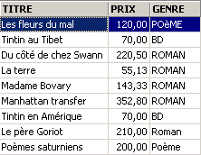
متوسط سعر الرواية؟ السعر الأقصى؟

كم عدد الكتب المصورة؟

كم عدد الروايات التي يقل سعرها عن 100 فرنك؟


عدد الكتب ومتوسط سعر الكتاب الواحد للكتب من نفس النوع؟
SQL> select upper(genre) GENRE,avg(prix) PRIX_MOYEN,count(*) NOMBRE from biblio group by upper(genre)

نفس السؤال، ولكن فقط للكتب التي ليست روايات:
SQL>
select upper(genre) GENRE,avg(prix) PRIX_MOYEN,count(*) NOMBRE
from biblio
group by upper(genre)
having upper(GENRE)!='ROMAN'

نفس الاستعلام، ولكن فقط للكتب التي يقل عدد صفحاتها عن 150 صفحة:
SQL>
select upper(genre) GENRE,avg(prix) PRIX_MOYEN,count(*) NOMBRE
from biblio
where prix<150
group by upper(genre)
having upper(GENRE)!='ROMAN'

نفس الاستعلام، لكننا نحتفظ فقط بالمجموعات التي يزيد متوسط سعر الكتاب فيها عن 100 فرنك سويسري
SQL>
select upper(genre) GENRE, avg(prix) PRIX_MOYEN,count(*) NOMBRE
from biblio
group by upper(genre)
having avg(prix)>100

3.14. إنشاء نصوص SQL لجدول
SQL هي لغة قياسية يمكن استخدامها مع العديد من أنظمة إدارة قواعد البيانات (DBMS). للتمكن من التبديل من نظام إدارة قواعد بيانات إلى آخر، من المفيد تصدير قاعدة البيانات أو ببساطة عناصر معينة منها في شكل نصوص SQL التي، عند إعادة تشغيلها في نظام إدارة قواعد بيانات آخر، ستكون قادرة على إعادة إنشاء العناصر التي تم تصديرها في النص.
هنا، سنقوم بتصدير الجدول [BIBLIO]. دعونا نختار خيار [استخراج البيانات الوصفية]:

لاحظ أنه يجب أن تكون داخل قاعدة البيانات التي تريد تصدير عناصر منها. يطلق الخيار معالجًا:
 |
مكان إنشاء البرنامج النصي SQL:
| |
اسم الملف إذا تم تحديد الخيار [ملف] | |
ما الذي سيتم تصديره | |
أزرار لاختيار (->) أو إلغاء اختيار (<-) الكائنات المراد تصديرها |
إذا أردنا تصدير قاعدة البيانات بأكملها، فسنحدد خيار [استخراج الكل] أعلاه. نحن نريد ببساطة تصدير جدول BIBLIO. للقيام بذلك، نستخدم [4] لاختيار جدول [BIBLIO]، ونستخدم [2] لتحديد ملف:

إذا توقفنا عند هذا الحد، فسيتم تصدير بنية جدول [BIBLIO] فقط. لتصدير محتوياته، نحتاج إلى استخدام علامة التبويب [Data Tables]:
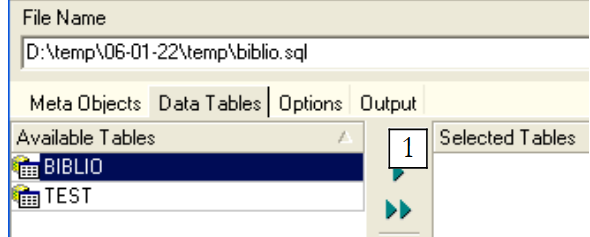 |
استخدم [1] لتحديد الجدول [BIBLIO]:
 |
استخدم [2] لإنشاء البرنامج النصي SQL:

لنقبل المطالبة. هذا يسمح لنا بعرض البرنامج النصي الذي تم إنشاؤه في ملف [biblio.sql]:
- الأسطر من 1 إلى 3 هي تعليقات
- الأسطر من 5 إلى 12 هي SQL خاص بـ Firebird
- الأسطر المتبقية هي لغة SQL قياسية يجب أن تكون قابلة للتنفيذ في نظام إدارة قواعد البيانات (DBMS) الذي يدعم أنواع البيانات المعلنة في جدول BIBLIO.
دعونا نُشغّل هذا البرنامج النصي داخل Firebird لإنشاء جدول BIBLIO2 الذي سيكون نسخة مطابقة لجدول BIBLIO. للقيام بذلك، استخدم [Script Executive] (Ctrl-F12):

دعونا نقوم بتحميل البرنامج النصي [biblio.sql] الذي أنشأناه للتو:

قم بتعديله للاحتفاظ فقط بأجزاء إنشاء الجدول وإدراج الصفوف. تم تغيير اسم الجدول إلى [BIBLIO2]:
CREATE TABLE BIBLIO2 (
ID INTEGER NOT NULL,
TITRE VARCHAR(30) NOT NULL,
AUTEUR VARCHAR(20) NOT NULL,
GENRE VARCHAR(30) NOT NULL,
ACHAT DATE NOT NULL,
PRIX NUMERIC(6,2) DEFAULT 10 NOT NULL,
DISPONIBLE CHAR(1) NOT NULL
);
INSERT INTO BIBLIO2 (ID, TITRE, AUTEUR, GENRE, ACHAT, PRIX, DISPONIBLE) VALUES (2, 'Les fleurs du mal', 'Baudelaire', 'POèME', '1978-01-01', 120, 'n');
...
COMMIT WORK;
دعونا نقوم بتشغيل هذا البرنامج النصي:
 |  |
يمكننا التحقق في مستكشف قاعدة البيانات من أن الجدول [BIBLIO2] قد تم إنشاؤه وأنه يحتوي على البنية والمحتوى المتوقعين:
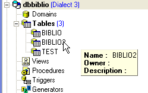 |  |